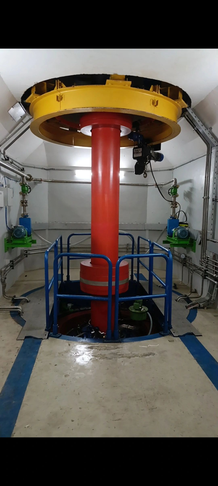
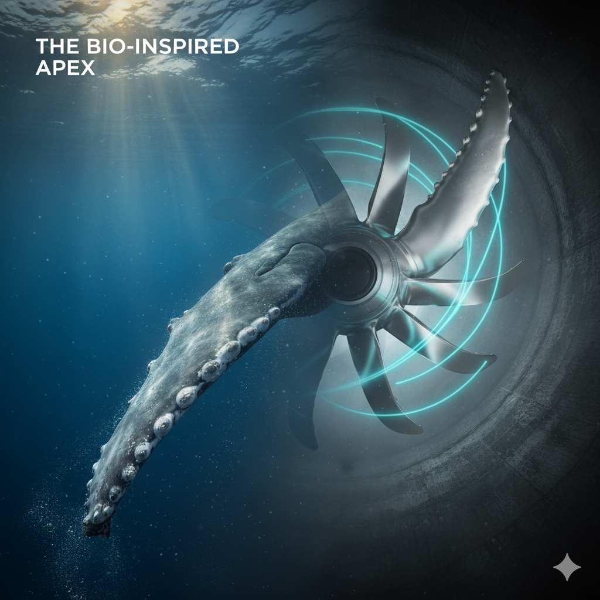

Technical Concept: Dual Biomimicry
Hybrid Tubercle + Denticle Cascade Eddy Harvester: This innovative concept combines macro-scale and micro-scale biomimicry:
- Macro-Scale (Tubercle): Solves complex flow dynamics and turbulence conditioning, ensuring stability in low-flow.
- Micro-Scale (Denticle): Solves frictional drag and bio-fouling, boosting net power output.
Introduction
The global imperative for clean, stable energy collides with a stark reality: the integrity of high-value hydropower assets is fundamentally compromised by organizational and cultural deficiencies.
Chapter 1: The Execution Gap
The global hydropower industry is navigating a crisis of Organizational Compromise. This reality creates a systemic "Execution Gap"—a critical chasm between a perfect design on paper and the flawed reality of its implementation on site.
Herein lies the TICKING BOMB THESIS: even the most precisely engineered turbine is vulnerable to failure caused by simple Installation Errors. Scientific research confirms that minute misalignments can introduce a staggering 48% risk of dynamic instability over the asset's lifespan.
Chapter 2: The Whale Fin Mandate
Standard Kaplan rotors are hyper-sensitive to these organizational flaws. The Whale Fin Rotor Concept integrates carefully sculpted tubercles along the blade's leading edge.

Chapter 3: The Scientific Approach
To validate this hypothesis, I conducted an independent CFD investigation. Scientific rigor was paramount:
- Models Used: Industry-standard
k−ω SST turbulence model. - Focus Protocol: Testing focused on Partial Load (
0.6×Qrated).
Chapter 4: Quantified Proof (ROI)
The simulation results provide clear evidence that technology must compensate for organizational risk.

STANDARD: FLOW SEPARATION

TUBERCLE: ATTACHED FLOW
The Dual Application Strategy
This is the ultimate de-risking strategy, promising Guaranteed Operational Excellence and the virtual elimination of flow-induced vibration issues.